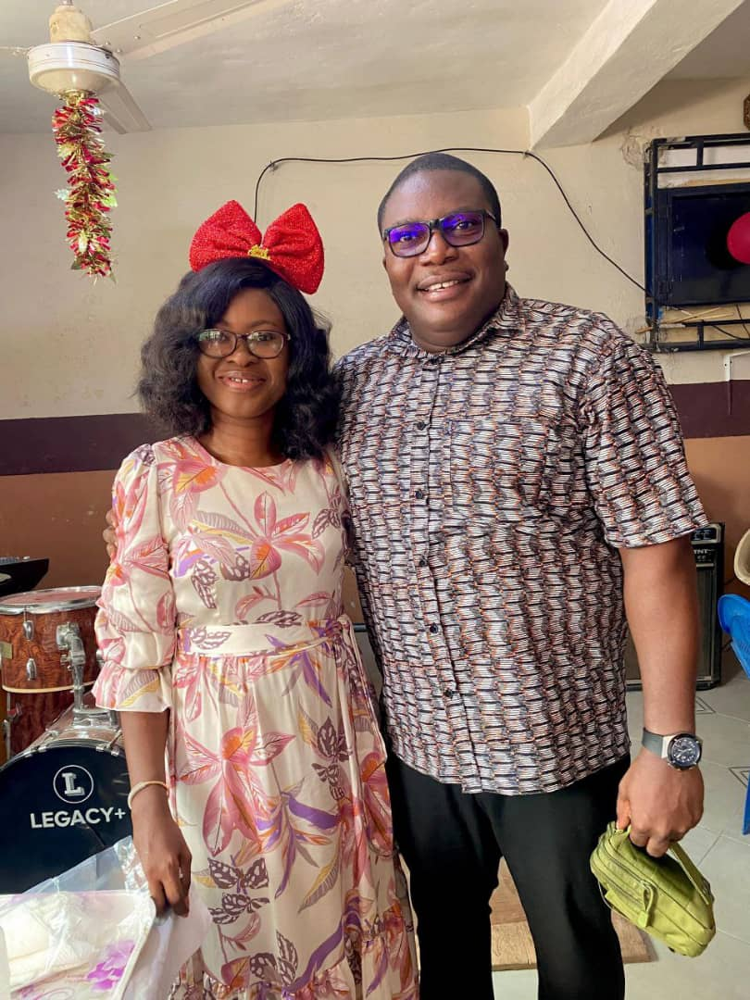
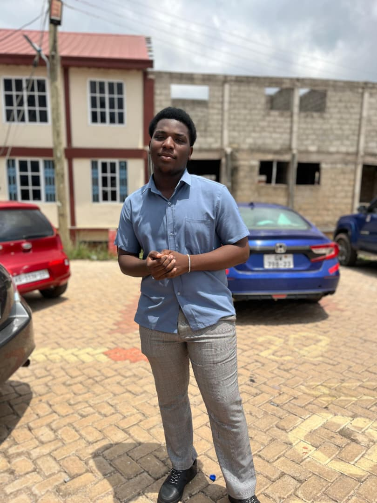
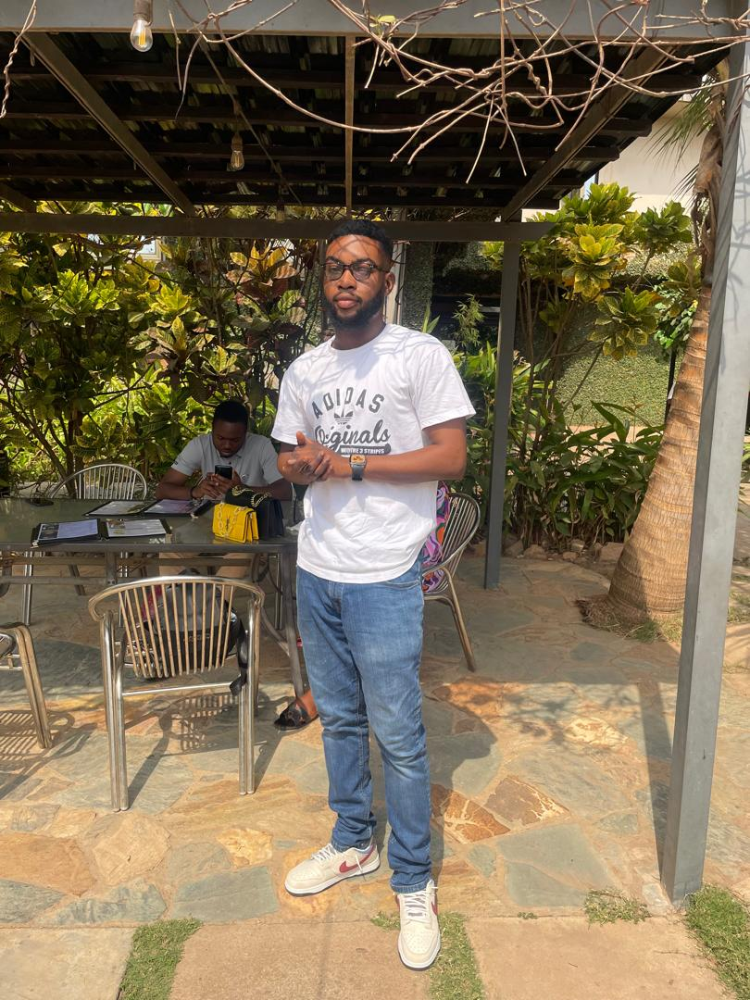
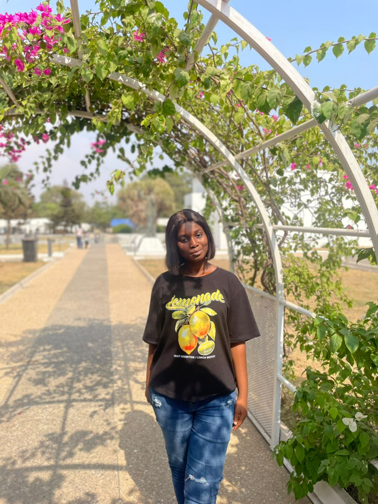
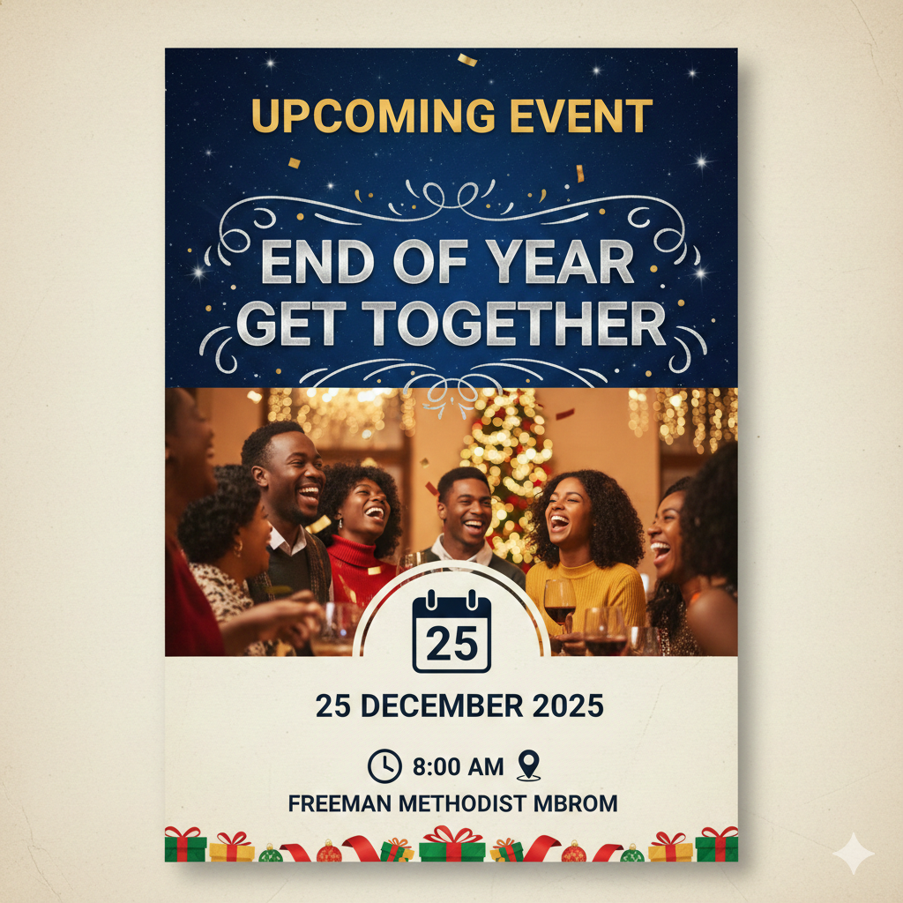

Grooming for Leadership
Nurturing the next generation of Christian servants and believers.
Empowering future leaders through focused discipleship and practical ministry
Forming faith and character in today's young men and women.
A dynamic youth ministry committed to spiritual growth and action.
Equipping the emerging generation with solid biblical truth and wisdom.

Dr. Mrs. Adwoa Benewaa Brefo-Manuh
Bro. Kwaku Kwarteng
We are so fortunate to have the steadfast support of our visionary patron.
Their compassionate heart has been the foundation upon which this ministry is built.
Our patron's unwavering dedication and generous spirit ensure our future leaders are nurtured.
We recognize them today as a true champion and an inspirational example to us all.
We study outstanding characters in the bible
A book is studied and we share our thoughts on it
We have a day where we wear our favorite team's jersey to Church
This is to teach us to be proud of who we are and where we come from
On this day we rock our African prints to showcase our culture
This is to help us appreciate our roots and where we come from
We organize regular get-togethers to foster fellowship and unity among members.
These events provide opportunities for bonding and building lasting friendships.
Where we sing praises, read the bible and listen to the word of God.
We will embark on outreach activities like visiting the needy
Evangelism and checking up on members in shs and university.

Responsible for creating and disseminating engaging content that inspires and connects our community
He is a member of Joyful Praise Singing Ministry.

Responsible for organization of the church premises for all the activities that go on
He is a member of Joyful Praise Singing Ministry.

Responsible for communications and staying in touch with all members.
She is a member of the Counseling Team.
We are a dynamic, Spirit-led team with a mission to set the atmosphere for authentic worship
Through a blend of contemporary praise and timeless hymns, we strive to lead the congregation into the deeper presence of the Lord.

Don't miss out come and let's break bread together.
Become a part of our vibrant community and embark on a journey of faith, growth, and fellowship.
Together, we can make a difference and shape the future leaders of tomorrow.
Location: Mbrom, Kumasi
Email: fysministry@gmail.com
Call: +233 20 088 1010
Call: +233 59 415 5946